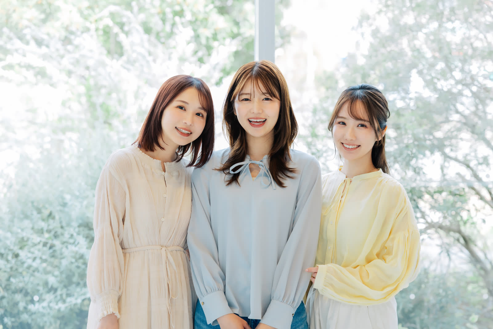

少人数の対話型授業
1年次から少人数の基礎ゼミに所属。発表と議論を重ね、自分の考えを伝える力を養います。
大学について
ことばと対話を大切にしてきた女子大学として、ひとりひとりが自分の声で考え、社会とつながる力を育てています。
「自らの声で考え、
社会に響かせる。」
本学は創立以来、女性が自分の考えをことばにし、他者と対話しながら社会を形づくっていく力を育ててきました。知識を得るだけでなく、問いを立て、仲間と確かめ合う。その積み重ねを4年間の学びの中心に置いています。
3つの特色
1年次から少人数の基礎ゼミに所属。発表と議論を重ね、自分の考えを伝える力を養います。
 02 / CROSSOVER
02 / CROSSOVER
副専攻制度により、所属学部の専門に加えて、関心のある分野をもう一つ体系的に学べます。

03 / CAREER卒業生メンターとの交流や個別面談で、ライフステージも見すえたキャリアを一緒に考えます。
 PORTRAIT — 学長
PORTRAIT — 学長学長メッセージ
迷いながら選んだ道も、
ここでなら自分の道になる。
受験を控えたみなさんは、将来について迷うことも多いと思います。大学は、その迷いを問いに変えて深めていく場所です。教員も職員も、みなさんの声に耳を傾けながら4年間を伴走します。キャンパスで会える日を楽しみにしています。
学長 ○○ ○○
沿革